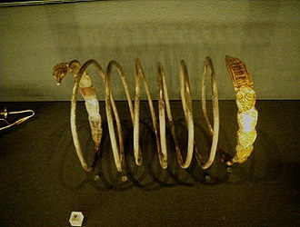
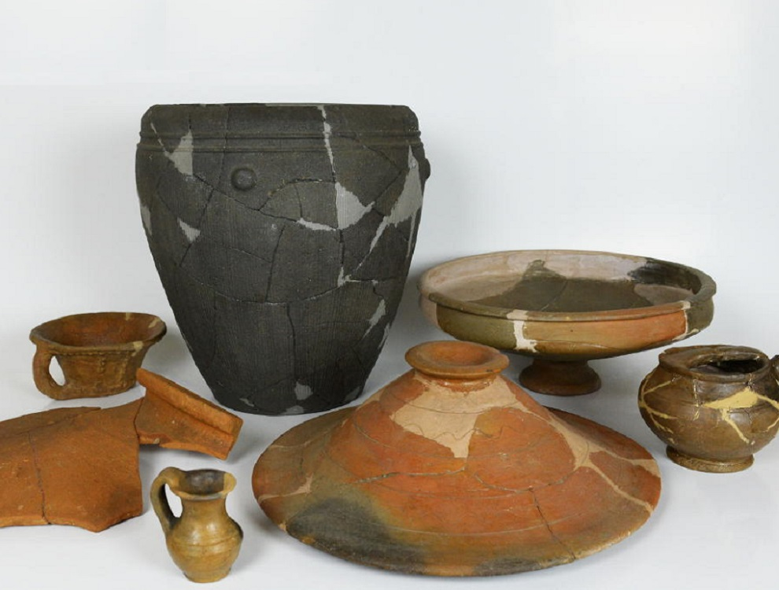
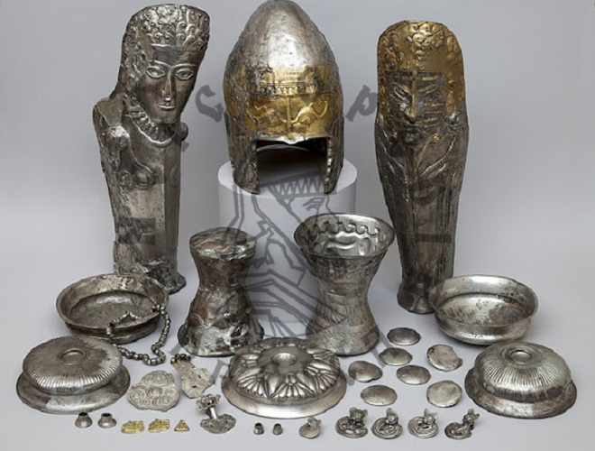
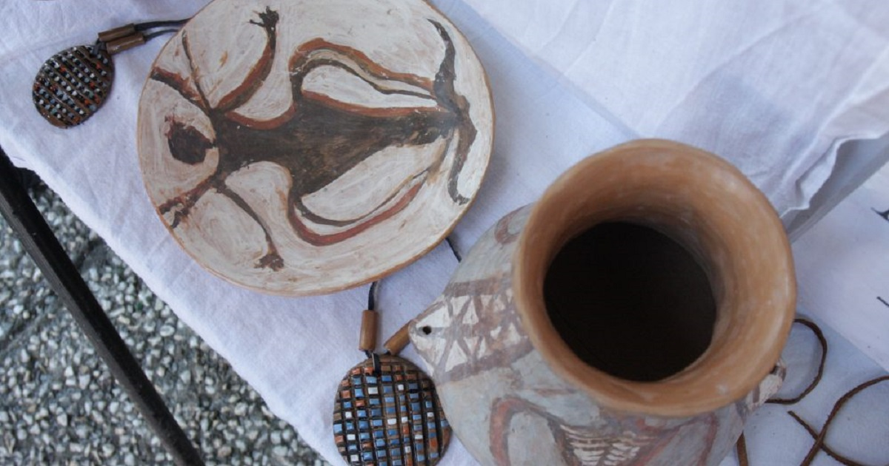
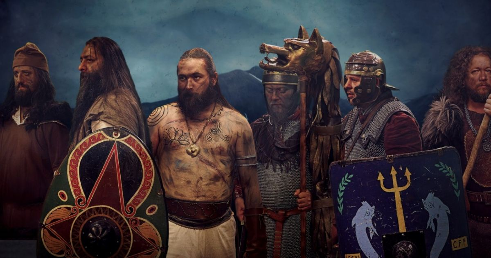
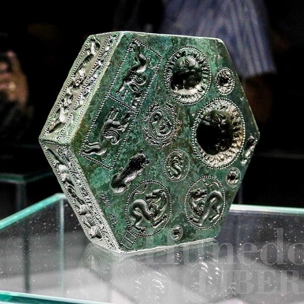
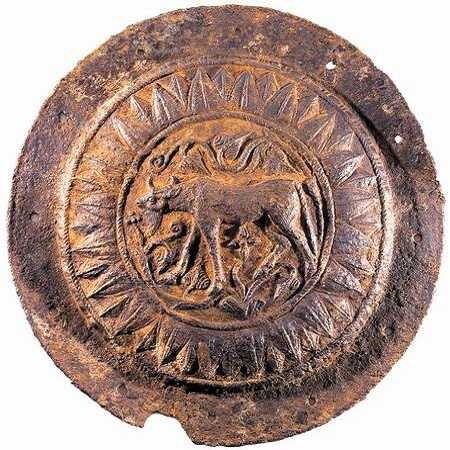

Cine erau dacii? - Cultura și civilizația dacică
Civilizația și cultura dacilor a avut în spațiul carpato-dunărean o dezvoltare de câteva sute de ani și a atins nivelul cel mai înalt în perioada sec. I î.H. - sec. I d.H. În arheologie, termenul de cultură se referă atât la aspectele vieții materiale, cât și la cele spirituale, în totalitatea lor, studiind: așezările, locuințele, uneltele, armele, ceramica, podoabele, riturile funerare, ritualurile religioase, manifestările artistice. Scriitorul antic Dio Chrysostom spunea: „geții sunt mai înțelepți decât aproape toți barbarii și mai, asemenea romanilor”.
●Influențe și caracteristici
Cultura daco-getică reprezintă o sinteză originală ce își are rădăcinile bine și adânc înfipte în mediul și în credința autohtonă, putând fi urmărită în timp cu milenii în urmă. Hadrian Daicoviciu spunea că această originalitate nu exclude, ci, dimpotrivă, implică acceptarea unor influențe din afară. Dar dacii nu s-au mulțumit cu preluarea unor elemente de cultură materială de la alte popoare. Ei le-au adoptat, le-au transformat și adesea le-au îmbogățit, contopindu-le în creațiile lor tradiționale și făurind o civilizație profund originală.
Este incontestabil că în Europa secolul I î.Hr, în afara statului roman, celții și geto-dacii constituiau cele două popoare importante în spațiul european, care atinseseră în dezvoltarea lor materială și social-politică un înalt nivel. Este de aceea firesc ca între cele două culturi să fie influențări reciproc. De aceea când vorbim despre stadiul culturii geto-dacice, punctele de referire trebuie să le căutăm în cultura celtică. Aportul cercetărilor făcute, mai cu seamă în ultimele 2 decenii, la cunoașterea culturii geto-dacice, au spulberat impresia împărtășită de unii cercetători, după care cultura strămoșilor noștri n-ar fi decât o cultură celtică. Rolul pe care l-au jucat influențele celtice atât la formarea civilizației de tip La Tène geto-dacică, cât și pe vremea lui Burebista, nu poate fi pusă la îndoială, dar aceasta nu înseamnă o celtizare a culturii geto-dacice. Aceasta se dovedește a fi o cultură originală care, a preluat, pe lângă influențe celtice și multe bunuri din civilizația grecească, fie direct, fie prin intermediul tracilor meridionali, la care se adaugă cele romane și celelalte. Cultura tracilor meridionali reprezintă într-o mare măsură o copiere a civilizației grecești, fără un aport propriu prea substanțial, la care, cu greu se poate sesiza și contribuția elementului autohton.
Economia
 |
 |  |  |
Agricultura Asemenea celorlalte ramuri tracice, și geto-dacii erau mari producători de cereale: orz, secară, linte, bob și mai multe varietăți de grâu. Baza economiei o formau agricultura și creșterea vitelor. Foloseau plugul cu brăzdar și cuțit de fier încă din sec. III î.e.n. Inventarul uneltelor agricole de fier însuma la acea dată: coase lungi (de tip celtic), seceri, sape, săpăligi, cosoare pentru tăiatul viței de vie, târnăcoape, securi, greble cu șase colți, etc. Geto-dacii cultivau intensiv și vița de vie. Câțiva termeni dacici legați de această ocupație au rămas până azi în limba română (butuc, strugure, curpen). Practicau tot atât de intens albinăritul și, bineînțeles, pescuitul. Creșteau vite cornute, mici și mari; iar rasa de cai foarte iuți ai geților era renumită. |
Prelucrarea metalelor Pământul Daciei era foarte bogat în minereuri. Meșterii geto-daci lucrau fierul și arama, argintul și aurul. Reducând minereul de cupru la o temperatură de 1085°C și amestecându-l cu cositor obțineau bronzul din care făceau felurite unelte și podoabe. Exploatau aurul nu numai din aflorismente (locurile unde, prin eroziune, roca auriferă apare la suprafață), ci și din nisipul aurifer al râurilor de munte. O mare dezvoltare luase prelucrarea fierului; metalurgia fierului a început pe teritoriul României către anul 800 î.e.n. În timpul lui Decebal, se pare că la Sarmizegetusa și în împrejurimi existau cele mai mari ateliere de metalurgie din întregul teritoriu al Europei, rămas în afara Imperiului roman. |
Ceramica Meșterii daci au început să folosească roata olarului din prima jumătate a sec. V î.e.n. Alți cercetători susțin însă că roata olarului ar fi fost folosită pe teritoriul geto-dacilor începând din sec. III î.e.n. La geții din Dobrogea și din câmpia de sud a Olteniei și Munteniei, tehnica lucrării ceramicii la roată se constată din secolele VI-V î.e.n. Deși ceramica lucrată cu mâna de geto-daci datează dintr-o perioadă mai veche (vasele descoperite la Tariverde datează din sec. VI î.e.n.), o producție locală caracteristică, de ceramică tipic geto-dacă apare mai întâi în perioada secolelor V-IV î.e.n. După o perioadă considerată „medie” (sec. III-II î.e.n.), epoca de aur a acestei ceramici este atinsă între aproximativ 100 î.e.n. și 106 e.n.; dată la care, odată cu cucerirea romană, ceramica geto-dacă va fi mult influențată (și treptat înlocuită) de produsele lucrate cu tehnica de depurare a pastei folosită de romani. |
|  |  |
Organizarea politică - Statul
Istoricii și sociologii vorbesc despre forme de "monarhie federală" la Daci, în perioadele când mai multe triburi se uneau sub conducerea unui singur șef militar. Dar nu de "stat" în sensul grec, roman sau actual al cuvântului, deoarece nu există date care să atesteze instituții permanente de coordonare sau de arbitrare a obștilor, de guvernare a societății sau de administrare a teritoriului. În mod curent, funcțiile de coordonare, de arbitrare, de guvernare și de administrare erau exclusiv și direct împlinite de șefii fiecărui trib în parte. Dacii ca popor puteau întruni armate puternice, construi cetăți sau poduri, dar numai ocazional, pentru a pregăti o acțiune militară. Sărbătorile și cultul erau alte ocazii de a întruni mulțimi și triburi diferite, dar și aici formele de organizare colectivă dispăreau odată încheiate festivitățile.
 |
 |
După Herodot,
●Organizarea militară
Armata daco-geților era compusă din pedestrime și din corpuri de cavalerie. Termenii tratatului de pace încheiat de Decebal cu Domițian, precum și cei ai condițiilor capitulării impuse de Traian arată clar că armata dacilor fusese instruită și dotată urmând modelul armatei romane; că avusese, un timp, în serviciul ei instructori și ingineri militari romani; și că în dotarea ei intraseră și arme și mașini de război romane, fapte care au asigurat un înalt potențial de război și o foarte bună pregătire de luptă.
Cetățile și așezările fortificate (unele datând din perioada anterioară formării statului lui Burebista) constituie dovezi elocvente privind nu numai aspectele militare defensive, ci și tehnica cu totul remarcabilă de inginerie militară a acestor construcții. Numărul lor este considerabil. Numai în regiunea Moldovei au fost descoperite până acum peste 20, datând din epoca cuprinsă între secolele VI-III î.e.n.
Bătălii
- dată necunoscută, contra tribului celtic Boii în Boemia, victorie dacă
- secolul 1 î.e.n. contra tribului Scordisci, victorie dacă
- 87, prima bătălie de la Tapae, victorie dacă
- 101, a doua bătălie de la Tapae, victorie romană
- 102, bătălia de la Adamclisi, victorie romană
- 106, bătălia de la Sarmisegetusa, victorie romană
Religia - Zalmoxis
Zalmoxis este considerat de unii istorici ca fiind zeul suprem din panteonul geto-dacic, de unde concluzia unora cu privire la monoteismul geto-dacilor care ar fi facilitat convertirea acestora la creștinism, idee ce se află în opoziție cu opinia conform căreia religia geților ar fi fost una politeistă, precum erau religiile celorlalte popoare indo-europene. Alți istorici îl consideră doar patronul lumii subpămîntene, al împărăției morților, având, astfel, caracter htonic, dar a fost identificat și cu Gebeleizis, zeu geto-dac al furtunii, trăsnetelor și al fulgerelor.
Mitul lui Zalmoxis
Mitul lui Zamolxis este redat diferit în numeroasele relatări antice, dar posibil ca varianta lui Herodot să fie cea mai apropiată de varianta reală, datorită faptului că este varianta cea mai detaliată și pentru că părintele istoriei s-a inspirat din medii culturale apropiate de societatea getică, și anume a cules date din coloniile grecești pontice pe care le-a vizitat. Pe scurt, pasajele lui din Cartea IV, 93-96, redau intenția de a explica credința în nemurire a geților, și anume după moarte ei merg la Zalmoxis. Sunt descrise și ritualurile de trimitere a solilor la Zalmoxis (aruncarea în suliți) ca și alte rituri (tragerea de săgeți către cer). Urmează un pasaj destul de controversat referitor la Zalmoxis: după ce și-a petrecut o parte din viață în Samos, ca sclav, dar și discipol al filozofului Pitagora, Zalmoxis se reîntoarce printre ai săi. Majoritatea cercetătorilor consideră acest pasaj ca pe o intenție de a-l așeza pe Zalmoxis, și prin el întreaga cultură geto-dacă în tradiția spiritualității grecești. Se descriu în continuare faptele lui Zalmoxis-omul după întoarcere: introducerea dogmei imortalității omului și alte rituri (tot de esență pitagoreică: ospețele comune) și actului retragerii într-o locuință subterană, urmat de apariții periodice ale sale. La încheiera pasajului chiar Herodot își exprimă neîncrederea în unele detalii exprimate de el, mai ales asupra legăturii directe dintre Zalmoxis și Pitagora. Totuși pasajul a fost reluat de numeroși autori, ale căror scrieri despre Zalmoxis pot fi încadrate tradiției lui Homer: Hellanicos (Obiceiuri barbare, 73), Clement din Alexandria (Covoarele, I, IV), Origene (Împotriva lui Celsus, II, 15), Iamblich (Viața lui Pythagoras, XXX, 73), Porphyrius din Tyros (Viața lui Pythagoras, 14), Suidas (Lexicon, 500).
Artă și cultură
Practicile ceremoniale se împleteau cu muzică și dansuri, ducând la un sincretism al formelor de expresie care a rămas specific folclorului și obiceiurilor populare. Xenophon în Anabis,VI,1,5, scrie despre dansurile războinice ale tracilor, între care unul cu caracter colectiv, în care mai mulți dansatori înarmați simulau înfrângerea unor dușmani. Posibil ca aceste dansuri să fi existat și la tracii nord-dunăreni și să fi stat la baza Călușului românesc. În Tristele lui Ovidius apare versul Păstorul cânta din fluierele lui lipite cu smoală (V,25.). Herodot mai amintește toba folosită de geți, iar Athenaios menționează fluierele și o liră specific getică, numită magadis. O informație dată de Teopomp și păstrată de Athenaios în Banchetul înțelepților, XIV, 24, ne spune că geții cântă din citerele pe care le aduc cu ei, când se găsesc într-o solie. B.P.Hașdeu consideră că doina are o origine geto-dacă și nu romană, deoarece romanii preferau genul epic spre deosebire de strămoșii românilor care preferau genul liric. În baza acestei idei B.P.Hașdeu aduce un argument privind continuitatea culturii geto-dacice după cucerirea și retragerea romană din Dacia.
|  |  |
 |